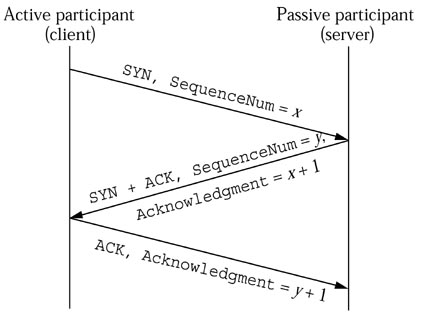
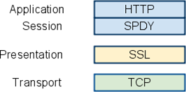
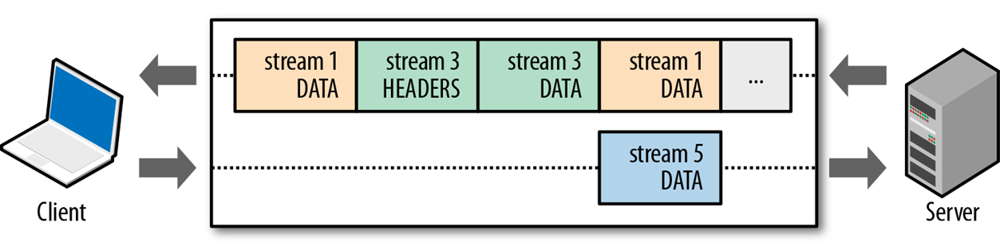
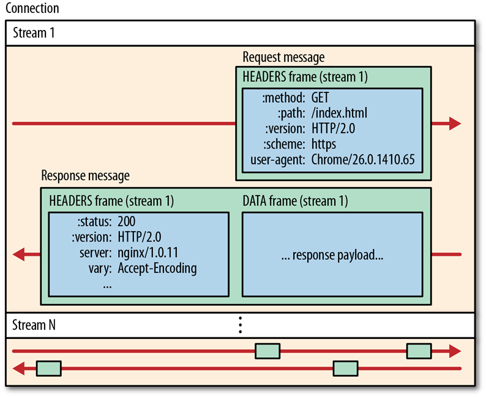
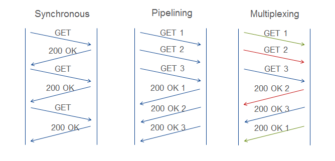
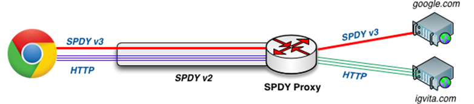
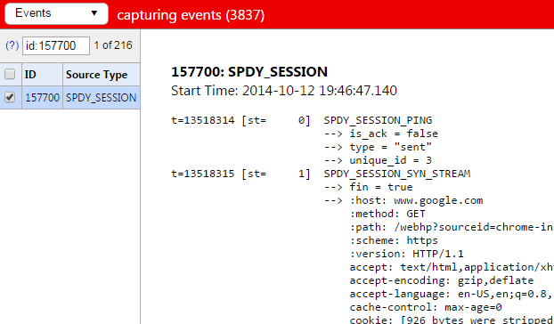
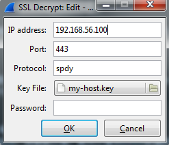
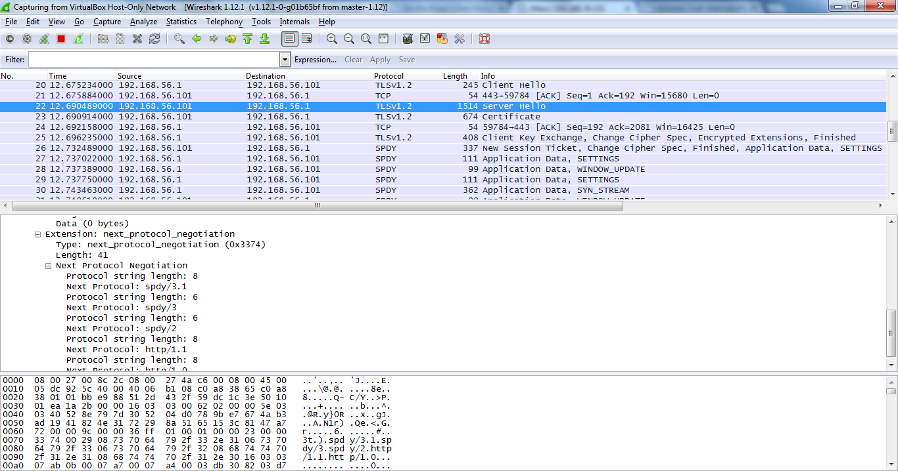
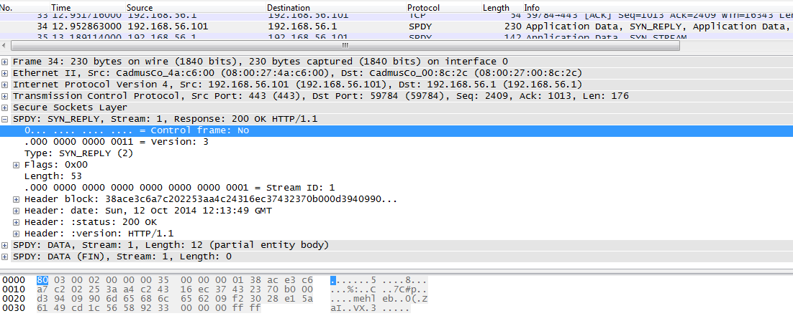

SPDY简介
Table of Contents
SPDY（读作speedy）是Goolge设计的一个对HTTP的增强协议，主要解决HTTP协议的传输效率和延迟问题。
在了解SPDY之前，我们先看看HTTP协议自身的一些局限性。
HTTP面临的问题
首先HTTP协议是建立在TCP协议之上的，而TCP协议有几个特点是不利于传输和降低延迟的。
- 三步握手（three-way handshake） TCP使用三步握手以建立可靠连接，虽然在第三次握手的时候即可携带有效报文数据，但仍然需要浪费一次RTT时间。

对于长距离传输，RTT时间基本是受限于物理规则的。我们可以简单计算一下，假设一个用户从新加坡向美国加州旧金山的网站发起连接，显然这是一次利用海底光缆的跨洋传输。在http://www.cablemap.info 我们可以查到全球海底光缆的布局情况，从新加坡到加州并非一条直线，光缆从新加坡到加州需要经过香港、菲律宾、关岛、夏威夷等节点，总距离超过1万6千公里。我们很容易查到海底光缆的折射率大概在1.47，这表明光纤中光速大概是30/1.47约每秒20万公里。仅考虑光速，一个RTT时间也是 1.6/30 x 1.47 x 2 约156ms，实际上这段距离的RTT大概在180ms，可以优化的空间非常少了。 - 慢启动（slow start）和拥塞控制算法（congestion avoidance algorithm） TCP的慢启动和拥塞控制机制都是基于滑动窗口实现的避免网络过载的方法，简单来说，由于初始网络状况未知，TCP一开始使用较小的速率发送，然后以2的指数倍增加速率，直到出现丢包（也就是出现拥塞），接着迅速降低速率（减半，回到上一个指数值），再以线性方式增加速率（其实是更平缓的指数），最终获得最合适的传输速率。而这个协商过程需要经历多次RTT时间。

从上面2点我们很容易发现，要想充分利用TCP，需要尽量重用连接，避免建立新连接。于是HTTP/1.1中引入了Connection: Keep-Alive属性，自此我们可以在一个TCP连接上传输多个资源。但HTTP仍然是个半双工协议，一次请求然后等待一次应答，仍然有大量的时间浪费在等待上。（HTTP/1.1的Pipelining虽然可以实现管线化传输，但由于诸多问题，Chrome早期版本默认并不启用，而新版已将此功能移除）
而且由于HTTP是无状态文本协议，每次请求都需要设置大量的Header字段，在传输性能上也不够好。
基于以上因素，Google设计开发了SPDY协议，我们来看看这个协议的设计。
SPDY协议设计
SPDY是工作在SSL之上的会话层协议，在单一TCP通道内提供多个会话流，从而实现了对TCP的多路复用。我们可以将SPDY理解为TCP链路上的一系列虚拟隧道和跑在这些隧道中的HTTP数据。

SPDY的主要特性如下：
- 基本特性：
- 多路复用，一个TCP通道内有多个独立的数据流
- 请求优先级，不同的流有不同的优先级，使重要资源优先传输
- HTTP Header压缩
- 高级特性：
- 服务端推送，主动向浏览器推送资源
- 服务端建议，在浏览器连接后建议浏览器接下来获取哪些资源
SPDY的概念主要有会话、流、帧。
会话(session)：等同于连接（connection）
流(stream)：在会话中的双向虚拟通道，通过Stream-ID来区分

帧(frames)：在流中传输的最小单元，分为控制帧和数据帧两种

所有的SPDY帧都有8字节的首部，通过第一个bit区分是控制帧还是数据帧
控制帧
+----------------------------------+
|C| Version(15bits) | Type(16bits) |
+----------------------------------+
| Flags (8) | Length (24 bits) |
+----------------------------------+
| Data |
+----------------------------------+
数据帧
+----------------------------------+
|C| Stream-ID (31bits) |
+----------------------------------+
| Flags (8) | Length (24 bits) |
+----------------------------------+
| Data |
+----------------------------------+
- C是控制标识位，1为控制帧，0为数据帧。
- Version是SPDY的版本，版本3.1也使用3.
- Type是控制帧的类型，例如创建流；应答创建流；PING；设置流的带宽、初始窗口、当前窗口、TCP CWND、TCP RTT等等，是不是很像又实现了一套TCP的传输控制机制？SPDY正是想在会话层弥补TCP传输层的不足。此外还有HEADERS帧用于携带HTTP Header的内容。
- Flags是对帧状态的指示，不同类型的帧有不同的Flags，例如数据帧使用0x01(FLAG_FIN)标识数据结束，而一些控制帧没有Flags，这个值必须设为0.
- Length就是数据长度。
- Data是有效载荷。
- Stream-ID就是流的标识。部分控制帧是跟流相关的，例如HEADERS帧，这些帧在Data段会携带Stream-ID。
SPDY这种基于流的连接复用有什么优势呢？
下图分别描述了HTTP/1.1、TCP和SPDY的连接复用模型，显然SPDY的多路复用比HTTP/1.1的同步模型要高效很多，所以SPDY规范里面明确禁止使用Connection, Keep-Alive, Proxy-Connection这些连接相关Header。

除了连接复用，SPDY还对Header进行了压缩。SPDY规定所有的Header名都必须全小写，并使用基于字典表的zlib压缩。
SPDY请求应答
SPDY的请求应答过程跟HTTP/1.1非常相似，但是我们注意到有一些以冒号开头的header，这些header是SPDY对HTTP协议的增强，个人认为其目的是为了在SPDY隧道中实现对HTTP的路由。
GET /resource HTTP/1.1 HEADERS
Host: example.org ==> + END_STREAM
Accept: image/jpeg + END_HEADERS
:method = GET
:scheme = https
:path = /resource
:host = example.org
:version = HTTP/1.1
accept = image/jpeg
HTTP/1.1 200 OK HEADERS
Content-Type: image/jpeg ==> - END_STREAM
Content-Length: 123 + END_HEADERS
:status = 200
{binary data} content-type = image/jpeg
content-length = 123
DATA
+ END_STREAM
{binary data}
协议协商
显然当浏览器连接服务器的时候并不知道服务器是否支持SPDY，SPDY为了节约一次RTT时间，对TLS协议做了扩展，这样在TLS握手阶段就可以实现SPDY的协议协商，这个扩展协议也是由Google提出的，名叫NPN(TLS Next Protocol Negotiation),后来HTTP/2草案设计的时候也借鉴NPN设计了ALPN作为HTTP/2的协商协议。目前Chrome已经在使用ALPN了。
NPN流程
Client Server
ClientHello (NP extension) -------->
ServerHello (NP extension & list of protocols)
[ChangeCipherSpec]
<-------- Finished
[ChangeCipherSpec]
NextProtocol
Finished -------->
Application Data <-------> Application Data
QUIC
由于SPDY运行在SSL之上，无可避免的会因为SSL握手带来额外两次RTT，同时SPDY也无法避免TCP的队首阻塞问题(Head-of-line blocking)，野心勃勃的Google当然不会就此满足，于是QUIC(Quick UDP Internet Connections)就此诞生。这是一个在UDP上实现的提供可靠传输的协议，并且加入了类似SSL的加密机制。QUIC非常像基于Stream Control Transmission Protocol (SCTP)运行的Datagram Transport Layer Security (DTLS)协议，但是相比以上两个协议的结合，QUIC提供了更低的延迟。
* 首次连接: 通常 1 RTT, 有时 2 RTTs
* 再次连接: 通常 0 RTT; 有时 1 RTT; 偶尔 2 RTTs
SPDY代理
前文已经说了SPDY可以理解为TCP链路上的一系列虚拟隧道和跑在这些隧道中的HTTP数据，虽然SPDY将这两部分混在了一起，其实隧道部分可以独立运行，即SPDY的代理模式。注意这也是目前唯一的一种HTTPS代理模式，以前我们只能在HTTP代理上通过CONNECT方法建立HTTP tunnel，但跟代理建立连接的过程没有SSL加密。 
详细请参考http://www.chromium.org/spdy/spdy-proxy
HTTP/2
HTTP/2是由IETF HTTPbis Working Group基于SPDY进行标准化后的协议。由于SPDY与HTTP/2同时在演进，并且互相借鉴，在目前阶段深究这两个协议的差异意义不大。但HTTP/2允许在非SSL链路上使用，于是设计了一套不依赖ALPN的Upgrade机制。
GET /page HTTP/1.1
Host: server.example.com
Connection: Upgrade, HTTP2-Settings
Upgrade: HTTP/2.0 //Initial HTTP 1.1 request with HTTP 2.0 upgrade header
HTTP2-Settings: (SETTINGS payload) //Base64 URL encoding of HTTP/2.0 SETTINGS payload
HTTP/1.1 200 OK //Server declines upgrade, returns response via HTTP 1.1
Content-length: 243
Content-type: text/html
(... HTTP 1.1 response ...)
(or)
HTTP/1.1 101 Switching Protocols //Server accepts HTTP 2.0 upgrade, switches to new framing
Connection: Upgrade
Upgrade: HTTP/2.0
(... HTTP 2.0 response ...)
基本上，我们可以将SPDY看成HTTP/2的早期实验版，从Upgrade机制来看SPDY也更加激进，而HTTP/2相对会保守正统些。
SPDY不足
SPDY虽然对单TCP连接的利用到了极致，但在互联网上，带宽基本是均分到链路中各个连接的，单连接的SPDY无法充分发挥用户到网站的带宽。除非以后SPDY一统天下，大家都只用一个连接。
Chrome net internals & Wireshark
对SPDY的调试最主要的工具就是Chrome内置的net internals,输入chrome://net-internals/#spdy即可看到当前SPDY会话。点击页面对应的会话ID，再刷新页面，就可以看到SPDY数据的详细情况了。

如果我们想查看更详细的SPDY数据包，就需要使用Wireshark进行抓包了。Wireshark处理HTTPS的前提是拥有网站证书私钥，所以只能对自己的网站进行抓包。最新版Wireshark(1.12.1)已经可以支持SPDY协议，安装后在Edit -> Preferences -> Protocols -> SSL -> RSA Key list 中增加私钥配置。

嗯，TLS握手，ALPN协商，SPDY每个流，每一帧都一目了然了。

要注意的是在我现在用的Wireshark版本上解析spdy有个小bug，会将控制帧识别为数据帧，如下图所示

后记
本文可以看做是High Performance Browser Networking: http://chimera.labs.oreilly.com/books/1230000000545/index.html 的读书笔记，再结合了我自己对SPDY的理解，特别感谢Ilya Grigorik将这本的电子版放到了网上，Ilya的个人网站https://www.igvita.com/archives/ 也非常值得看看。